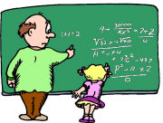
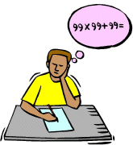

|  |  |
| If you want to go to Xmas Tree Primes, click here. |
| If you want to go to OP-PO Primes, click here. |
62 = 17 + 19C Rivera
23 = 3 + 5
1504 = 253124999 + 253125001
965 = 4076863487 + 4076863489
3246 = 578415690713087 + 578415690713089
67 = 139967 + 139969
15188 = 14097567309074239886172287 + 14097567309074239886172289
1749 = 73099303486215558911 + 73099303486215558913
16810 = 8954942912818222989311 + 8954942912818222989313
But here's more, from a JRM article by Charles Trigg, "A Closer Look at 37". [i've lost my copy, it was back in the early '70s.]Then Monte Zerger came back with these beautiful items:
The initials of the only U.S. president (so far, anyway) to resign while in office are R.M.N. He was the 37th president. Ok?
Now R = 18, right? And 18 x 37 = 666.
But wait--- there's more. M = 13 and N = 14, so M + N = 13 + 14 = 27. and 27 x 37 = 999 (which is... well, you know...).
Trigg's political message should be obvious, agreed?
To: 47society@yahoogroups.com
From: trottermath@gmail.com
Date: Fri Jul 6, 2001 1:32 am
Subject: Kaprekar & Counting Letters
Now isn't that an unusual subject line!
I assume that many readers are familiar with the unique number activity that leads to the famous result called Kaprekar's Constant: 6174. That is the one where you first order the digits of a four- place number from large-to-small, then reverse that number, and subtract the two. If you repeat the process correctly, within 7 steps you arrive at 6174 -- always. And there's 47 in reverse!
To find out more, do a search on Kaprekar, or better yet, just go to my webpage at:
It's all explained there.
But wait, there's more. Take Kaprekar's Constant and separate it into two parts... 61 and 74. Reverse the 61, yielding 16.
Next, write down all the composite numbers less than or equal to 16, i.e. 4, 6, 8, 9, 10, 12, 14, 15, & 16.
Now, express those in word form: four, six, eight, nine,...,sixteen.
Count the letters you have just written. If you were a good speller, you should have 47 (the reverse of 74)!
That's all there is to it.
Terry
Another pair of tib-bits from the Monte Files...
I like the concept of using the nine digits 1 to 9 to make interesting number facts. (See The Century Problem.) Here is a nice variation that maybe should be called the "Century - 1" problem.
On February 8, 2000, he wrote:
I've encountered two things recently that may be of interest to you. They seem to "fit" with other things you have played with and made use of on your web page, etc.
[From Prime Curios: 999]
A Xmas Tree Prime is hereby defined as "a prime number consisting of a 'triangular number' number of digits (i.e., 1, 3, 6, 10, ...), such that the first digit is a prime, the following two digits (which constitute a prime by themselves) form a prime of 3 digits, then the following three digits (which constitute a prime by themselves) form a prime of 6 digits, and so on."
An example will clarify that definition. 241823 is a 6-digit Xmas Tree Prime because 2 is the single-digit prime, 41 is a two-digit prime, and 823 is a three-digit prime. But the first two primes also form a prime in their own right: 241.
Now to explain the idea of the Xmas Tree...
Notice that if we arrange the digits of our prime like so...
we have the beginning of a "Xmas Tree" of sorts, with each row being a prime number. Simple, maybe. But we like it. [One small requirement for the primes: a row cannot begin with a zero (0).]
There are only 29 XTPs of 2 rows, i.e. 3 digits. (241 is an example of a tree of species "2"; 389 for species "3", and so on.) They are distributed among the four single-digit primes as follows:
Using any convenient list of primes less than 1000, they are not hard to find. WTM has such a list available HERE.
But finding XTPs of 3 rows provides the prime hunter with a larger challenge, though not one that is unsurmountable, given enough time and a longer prime list. of course. For example, WTM has found 23 XTPs of the form 211abc, beginning with 211151 and ending with 211997. Since 211 is the smallest XTP of 2 rows, it follows that 211151 is the smallest XTP of 3 rows. The largest XTP however of 3 rows is this beauty: 797977!
As mentioned above, some Xmas trees are more attractive and better shaped than others. The same might be said for XTP's as well. Different characteristics can be described to show how interesting some of them can be. One way is to look for 6 distinct digits. Of the 78 possible XTP's beginning with "2", we have found 11 of them to be so composed, beginning with 241739 and ending with 283769.
On the flip side of that idea is to notice XTP's that have only 2 distinct digits, such as that largest one mentioned above, with only 2 digits being used. And one of our personal favorites is this: 211313. Notice how the appearance of its digits might be described... "one 2; two 3's; and three 1's".
Though we admit to have only begun our research into this intriguing little topic, we have found one XTP that may be one of a kind hard to find, if not unique. It is the smallest case of the species "3": 311137. Look at it in its "tree form".
Observe the 3 digits that form the "left side" (311) and the 3 digits that form the "right side" (317) -- they're both primes as well. What a shining, sparkling tree this one is!
Finally, to close this initial installment to the exploration of XTP's, we present the smallest possible 4-row, 10-digit tree. It is 2111511013, [recall that 2, 211, and 211151 are all primes, too]. But look at its tree form:
Aren't we lucky here? 2111 and 2113 are twin primes who form the left and right sides of our tree. And who is in the "central heart" position? The 5! The lone odd number that can't serve in the unit's place of any multi-digit prime! Was this a case of beginner's luck? What do you think?
The letter "O" refers to the Ordinal position of a given prime in the list of all primes. For example, the 8th prime is 19.
We can now form a new number by concatenating the ordinal value with the prime itself, thusly, 819. This is a number of the OP type. If such number is then a prime as well, it is an OP prime!
We can also reverse the placement of the ordinal value and the prime, putting the prime first and the ordinal second. This yields a number of the PO type. For our example, we would have 198. As before, if such number is also a prime, it is a PO prime.
Unfortunately, 8 and 19 do not form primes in either manner. (They were used just to show the concept.) But never fear. There are many OP primes and PO primes that can be found. Here are some small samples of each:
It should be obvious that primes of the OP type occur more frequently than those of the PO type. But when you do find an OP prime that also forms a PO prime, well, now you really have something. That shall be called an OP-PO Prime. The smallest such case is the 121st prime: 661. Hence, the first and smallest OP-PO Prime is
because 661121 is also a prime. In fact, 121661 is the 30th OP prime, and 661121 is the 10th PO prime. Nice, huh?!
Xmas Tree Primes
WTM is proud to announce (7/24/01) the definition of a new category of primes. At least we think it is new; we've never seen it before, so we didn't copy the idea from someone else.
4 1
8 2 3
Xmas Tree Primes (XTPs) come in various sizes and degrees of attractiveness, just like the real evergreen trees that are an essential part of the Xmas season. It's clear that there are only 4 XTPs of one row -- the four single-digit primes (2, 3, 5, and 7). So whatever size other XTPs have, they must begin with one of these four primes. [Let's call them the "species" of the primes/trees.]
Species Number 2 6 3 14 5 4 7 5 Total 29
1 1
1 3 7
1 1
1 5 1
1 0 1 3
Update: 7/28/01
We've now found our smallest XTP of 5 rows (i.e. 15 digits); it is
.
Here is its tree form:
1 1
1 5 1
1 0 1 3
1 0 8 6 7
OP, PO, and OP-PO Primes:(7/29/01)
Here's another way to classify primes: OP-PO primes! Actually it is 3 classifications in one. This is what it means:
Order Prime OP prime? PO prime? 2 3 23-yes 32-no 3 5 35-no 53-yes 4 7 47-yes 74-no 6 13 613-yes 136-no 9 23 923-no 239-yes 121661
Comments?
Send e-mail.Back to
topGo back to
Home PageGo back to
Contents